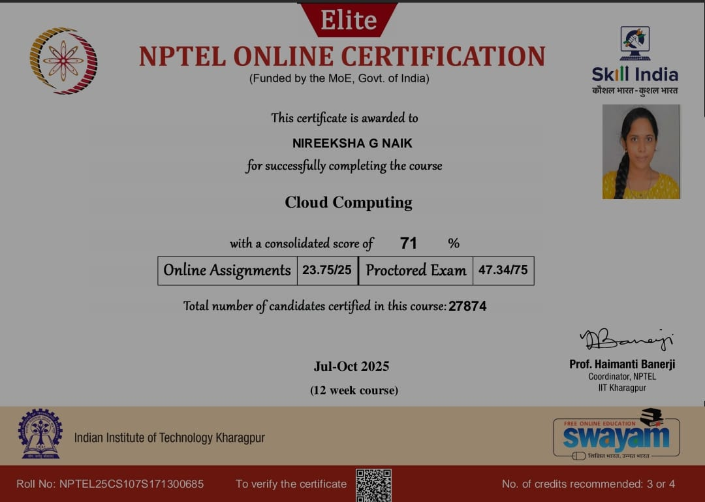
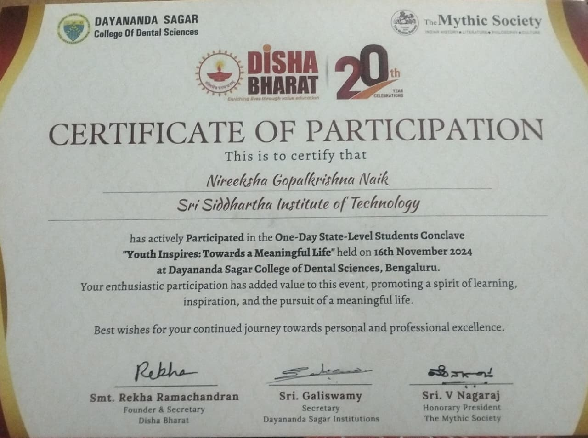
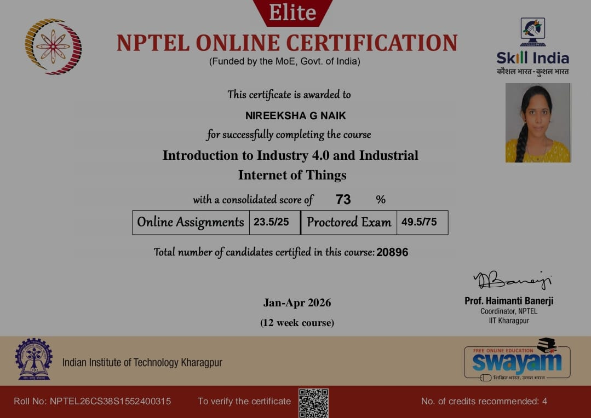
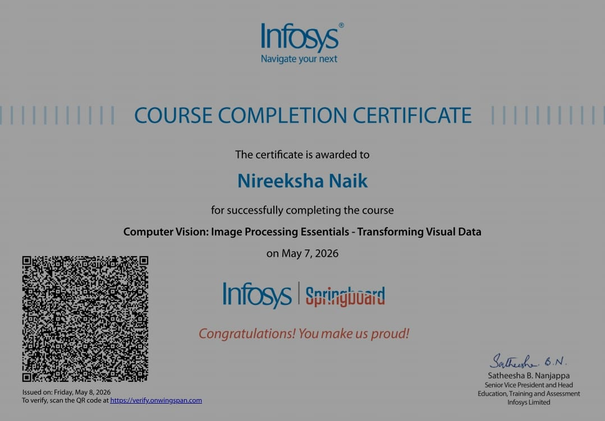
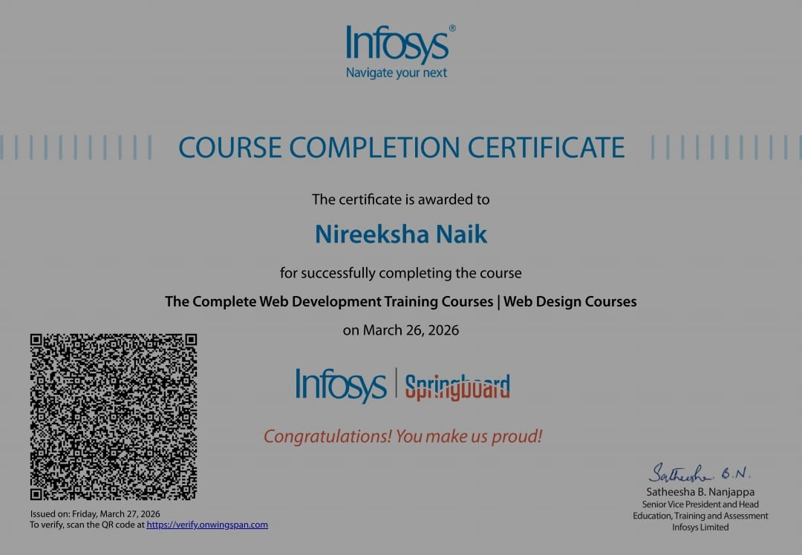

Nireeksha Naik
Computer Science Engineering Student | Aspiring Software Developer
I build real-world solutions, love solving problems, and constantly explore new technologies to grow as a developer.
Hire Me
Computer Science Engineering Student | Aspiring Software Developer
I build real-world solutions, love solving problems, and constantly explore new technologies to grow as a developer.
Hire MeI am a 4th year Computer Science Engineering student at Sri Siddhartha Institute of Technology, Tumakuru with a CGPA of 8.44. I am passionate about building applications that solve real-world problems and improving my skills every day.
I actively participate in hackathons, technical events, and leadership activities. I have experience working in teams, managing events, and contributing to impactful initiatives.
To become a highly skilled software developer by working on innovative and impactful projects, gaining real-world experience, and contributing to meaningful technological solutions.
🔍 Actively seeking internship opportunities and preparing for full-time software roles.
Java, Python, C, SQL, JavaScript
HTML5, CSS, JavaScript, Node.js, Express.js, Flutter (Basics)
MongoDB, MySQL, SQLite, Git, GitHub, VS Code, Android Studio, Arduino IDE, Postman
Data Structures & Algorithms, Object-Oriented Programming (OOP), Database Management Systems (DBMS), Operating Systems, Computer Networks
Leadership, Problem Solving, Teamwork, Communication, Event Management, Time Management
Git, VS Code
Developed an IoT-based real-time people counting system using Arduino and sensors to monitor entry and exit. The system accurately tracks movement and displays live counts.
Tech: Arduino, IR Sensors, IoT
Developed a location-based application that provides real-time crowd insights using GPS, map integration, and stored data to help users identify less crowded places.
Tech: Flutter, Node.js, Express.js, MongoDB, GPS
Designed and developed a responsive fashion e-commerce website with an attractive user interface, product listings, and a smooth shopping experience.
Tech: HTML5, CSS3, JavaScript
Built a web-based complaint management application to register, track, and manage complaints efficiently with secure user authentication.
Tech: Django, Python, SQLite, HTML, CSS

Code Bizz 2026 – Volunteer
Demonstrated leadership and coordination while organizing a technical event.

Viksit Bharat YLD 2026
Participated in a national-level initiative highlighting innovation and leadership.

Shark Tank Open House
Contributed to organizing an innovation-driven event showcasing teamwork.

NPTEL – Cloud Computing
Successfully completed a 12-week NPTEL Cloud Computing course offered by IIT Kharagpur through SWAYAM with a consolidated score of 71%. Learned cloud architecture, virtualization, cloud services, and distributed computing.

DISHA BHARAT – State-Level Student Conclave
Participated in the "Youth Inspires: Towards a Meaningful Life" conclave, enhancing leadership, communication, and personal development skills.

NPTEL – Introduction to Industry 4.0 and Industrial Internet of Things
Successfully completed the NPTEL certification with a score of 73%. Learned Industry 4.0 concepts, IIoT, smart manufacturing, cyber-physical systems, and industrial automation.

Infosys Springboard – Computer Vision
Successfully completed the Computer Vision course, learning image processing fundamentals, feature extraction, and computer vision concepts.

Infosys Springboard – Web Design
Successfully completed the Web Design course, gaining practical knowledge of HTML, CSS, responsive design, and user-friendly web interfaces.
Email: nireekshagopalkrishan@gmail.com
GitHub: github.com/nireekshanaik
Portfolio: nireeksha11-cmd.github.io
Open to Internship & Full-Time Software Developer Opportunities
📄 View Resume